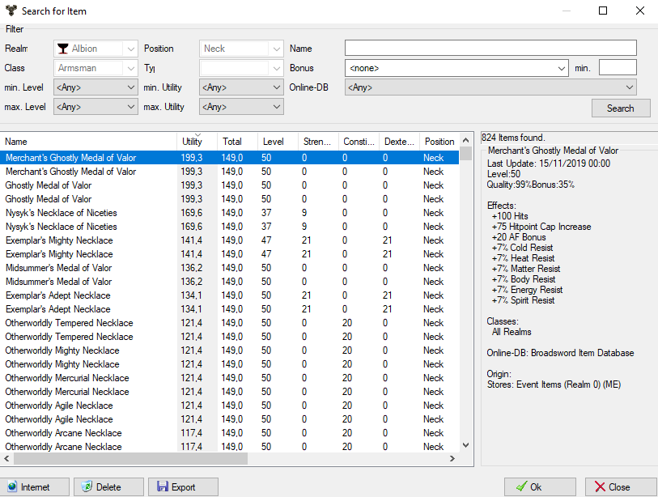

With this dialog, an object can be searched for a specific position. This dialog can be called in 3 ways:
- Double-click on the position for which you want to search
- About the context menu of the position
- Press the "Search" button
The window consists of 3 components. The largest place is in the list of objects. The items found for the desired position in the set search options are displayed in it. Further information about the currently selected item is displayed on the right.
Different search options can be set in the lower area. These depend on the chosen position.
A "function" option has a special function. It has 4 options:
- Drop items: Items are searched from the item database (default setting)
- This player: Items belonging to the player (carried, in inventory or treasure chest)
- This Account: Items belonging to players on this account (and server)
- This server: Items belonging to players on this server
With a double-click on an object or by pressing the OK button, the object is taken over in the configuration.
 Tip:
You should arrange the search window so that you can see the player's
values as shown in the image above. This allows you to see in the red
(The selected item is worse here) or green (here it is better) bars how
the currently selected item is cut off compared to the previously
available item.
Tip:
You should arrange the search window so that you can see the player's
values as shown in the image above. This allows you to see in the red
(The selected item is worse here) or green (here it is better) bars how
the currently selected item is cut off compared to the previously
available item.